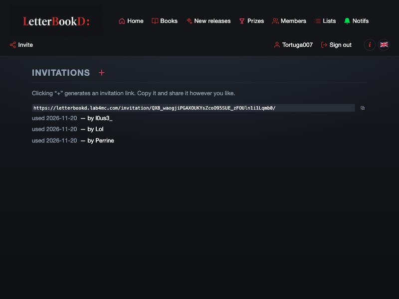

Invitations
Why it exists: Invite a new member into one of your clubs without sharing a password. A click on '+' generates a link you can paste into an email, a text message or a private message. The person who follows it creates an account and joins the club.

Walkthrough
The page lists your existing invitation links, one URL per line, with a status (pending, or 'used on ... by ...'). A click on '+' creates a new unique invitation link.
Important: each new link invalidates the previous unused one. For security, you can only have one active link at a time. Copy the link with the dedicated icon, then share it however you like.
Action chains
Each row describes a trigger in the UI, the modal or form it opens, and the resulting effect.
| Trigger | Modal / Fields | Effect |
|---|---|---|
| '+' button next to Invitations | POST form with no parameters. | Generates a new unique invitation link (signed URL). The previously active link is disabled. The new link appears at the top of the list. |
| 'Copy' icon next to an invitation URL | — | Copies the URL to the clipboard, so you can paste it into the tool of your choice. |